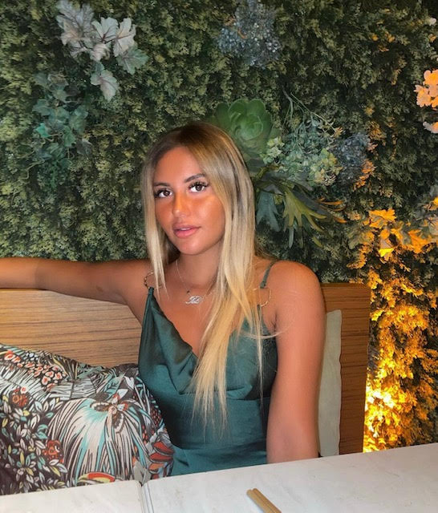

WELCOME TO MY PROFILE !
Hello!! My name is Tali Abbou. I was born in Paris in France. I have led a pretty international life after studying in an international School which gave me many oppurtunities. Also, as I've been constantly visiting many places around the world throughout my vacations, Canada and Japan being one of my favourite places, I have become curious :) and open-minded. I'm currenty living in Cergy, where I am studying a degree in Business Administration at ESSEC Business School
Discover where I am studyingMY ASSOCIATION
I am part of an association called Lev Tov since 2019. In this association, I am able to help children and families in need. It is an experience that reminds me, how life could be complicated. It keeps my feet on the ground. This is something that I'm very proud of because I think that when we can, it is very important to help people who neeed it.
TRAVEL
I love travelling, discovering new cultures, meeting new people,etc. In my opinion, seeing the world is more educational than a high school or college clas. When we travel, we have the possibility of learning a new language, a new cuisine, aspects of a different culture, or even acquiring a deeper appreciation of faith or spirituality.
Also, I feel like travelling helps to open your mind. You realize that there’s no one way to live life. Especially, meeting people from other places will show you that your world view isn’t the same as everyone else’s.
I personally prefer to visit places where the weather is warm, such as Morroco, Dubai, Greece, Turkey... Nonethless, one of the places that I prefered was Israel and trust me it's not always that war over there ! I went there at least 10 times and visisted each corner of it.
MY PASSION
I am passionate about fashion since ever. It is my grand-mother who gave me the taste of it beacause she used to work in the fashion industry at Printemps Boulevard Hausmann. I've always dreamed to work in this sector espcially the luxury one. I have a favourite designer, Yves Saint Laurent. I love his work that I first discovered in the museums dedicated to him in Morroco and in Paris. He is an Algerian and I am too, and we can find a bit of the Algerian culture in his creations which reminds me my origins. Therefore, I think that this a brand that looks like me and I would love to work there.